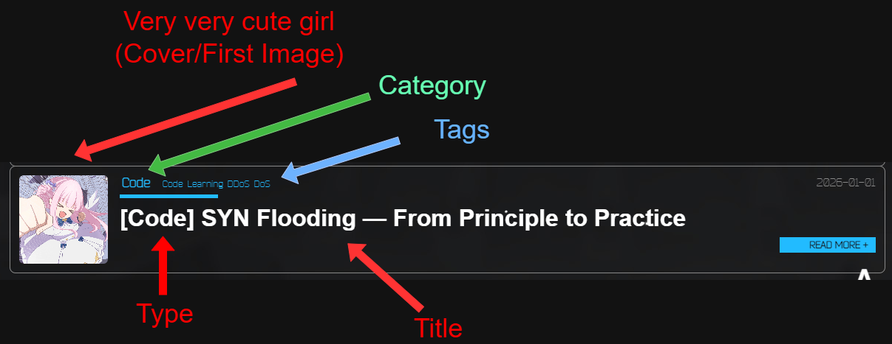
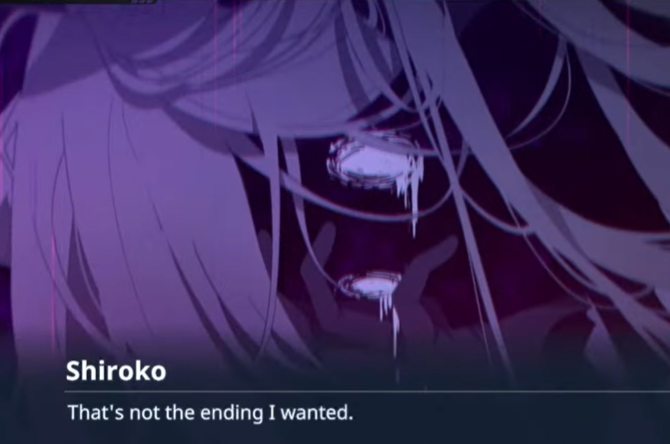
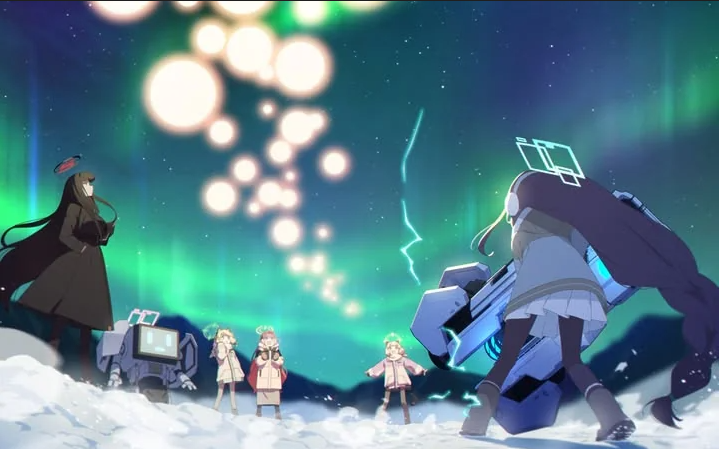

About
Hello world.
Welcome to my blog!1
2
3
4
5printf("Hello world.\n");
std::cout << "Hello world." << std::endl;
print('Hello world.')
Console.WriteLine("Hello world.");
System.out.println("Hello world.");

Self-introduction
My name is Issac, and I am interested in cybersecurity, networking, technology, and both human languages and programming languages. I speak Mandarin, Cantonese, and English, and I have a basic level of Spanish, Japanese, and Korean.

I have been studying cybersecurity since middle school. I initially focused on web security, including web shells, databases, remote code execution, and web exploitation. Recently, I have been studying C2/RAT (Remote Access Tools) and exploits——not only how to use existing tools, but also how to write them. I believe these are essential parts of penetration testing, and it is necessary to understand their underlying principles.
People often say that instead of trying to build tools from scratch, we should use tools developed by others. Of course, this approach is useful, as those tools are built by professionals. However, from my perspective, everyone who is capable of building professional tools also started somewhere.

Idea of cybersecurity skills
I love coding and penetration testing and hacking skills, not because they are fun or make me look cool, but because they are powerful—almost like a superpower.
However, power is often abused. Once people obtain power, they may be tempted to misuse it. That is why we must understand the meaning and responsibility behind power; otherwise, we are no different from animals——or criminals.

About this blog
Tips

- Type is NOT Category:
| Type | Description |
|---|---|
| Code | Provided code for related topic. |
| Tool | Provided or introduced the usage for the tool. |
| Learning | Describe a concept/Solving practical problem. |
| TroubleShoot | Solving practical issues. |
| Note | Keeping notes for a domain while studying. |
| Book | Keeping notes for a book while studying. |
| Blackhat | Write something about offensive/defensive skills |
| Murmur | Nonsense…? |

Murmur
There is no fixed update schedule, as my availability depends on my time, mood, and mental state.

⚠️ Personal thoughts — please read gently

Unfortunately, I am currently struggling with mental issues and sometimes feel lost in an endless abyss, unable to find the right help even from professionals. I apologize if any of my words make you feel uncomfortable. I find some relief in reading, listening to music, coding, studying exploitation PoCs, and occasionally looking up at the night sky. These small things help me endure and stay grounded. There was a moment when a classmate once told me: > Don't write your own tools. Just use the ones written by others. Since then, one of my dreams has been to become one of those “others” — someone whose work can be used by others — while someday standing under the aurora, looking up at the night sky with stars.
Thank you for taking the time to read these personal thoughts. I sincerely wish you all the best.
Recently active repos
- DuplexSpy: A GUI-based Windows remote access tool written in C#.
- EgoDrop: An experimental GUI-based Linux/Windows remote access tool.
- Alien: A web shell management tool. I am planning to rewrite it, as the previous version was poorly designed.
Skills and Learning
Frameworks


IDEs


OS

Languages
Programming Languages


- Win32 APi C++
Human Languages
- Mandarine
- Cantonese
- English
- Spanish
- Japanese
- Korean
Others
- Concurrency programming.
- Raspberry PI
- Lock picking.
Cybersecurity
- Web Pentesting
- Domain Pentesting (AD/Cobalt Strike/Armitage/Metasploit)
- Network Programming
- Reverse Engineering (IDA/Ghidra)
- Shellcode
- Industrial security
Interest
- Practical/Offensive Cybersecurity
- Remote Access Tool
- Exploitation
- Tool Development
Cute Anime Girl
Recently Reading/Recommanded Books
| Name | Description |
|---|---|
| C++20 for Programmers: An Objects-Natural Approach | A book of C++ 20 programming. |
| 域滲透攻防指南 | A book of Windows domain(AD) pentesting. |
| 逆向工程核心原理(이승원) | This book introduces the principles and nutshells of reverse engineering, the original version is written in Korean. |
| The TCP/IP Guide: A Comprehensive, Illustrated Internet Protocols Reference | An excellent book for understanding the principle of TCP/IP. |
| Windows 軟體安全實務 — 緩衝區溢位攻擊 | It introduces the practical aspect of buffer overflow. |
| 防火牆和VPN技術與實踐 | This books introduces the principle and practical implementation of VPN and firewall. |
THANKS FOR YOU READING